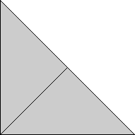

Trivial.
Trivial.
Found by Ed Pegg
in March 2005.
| 1. | 2. 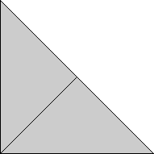 | 3.
| ||
| s = 1 Trivial. | s = √2 = 1.414+ Trivial. | s = 1.961+ Found by Ed Pegg in March 2005. |
| 4. 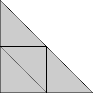 | 5. 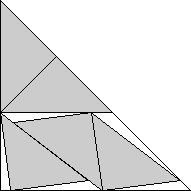 | 6. 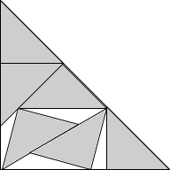 | ||
| s = 2 Trivial. | s = 2.405+ Found by David W. Cantrell in May 2005. | s = (12 + √6 + 5√2)/8 = 2.690+ Found by Maurizio Morandi in October 2007. |
| 7. 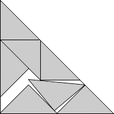 | 8. 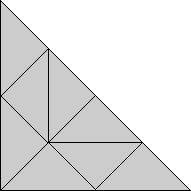 | 9. 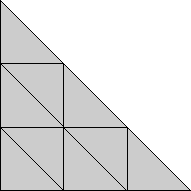 | ||
| s = 2.824+ Found by Maurizio Morandi in August 2007. | s = 2√2 = 2.828+ Trivial. | s = 3 Trivial. |
| 10. 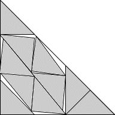 | 11. 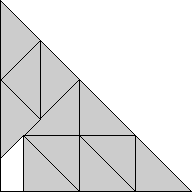 | 12. 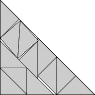 | ||
| s = 3.307+ Found by Maurizio Morandi in November 2007. | s = 2 + √2 = 3.414+ Found by Erich Friedman in March 2005. | s = 3.531+ Found by Maurizio Morandi in August 2007. |
| 13. 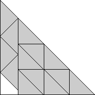 | 14. 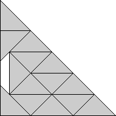 | 15. 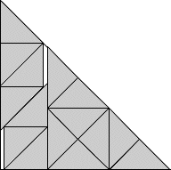 | ||
| s = 3 + √2/2 = 3.707+ Found by Erich Friedman in March 2005. | s = 1 + 2√2 = 3.828+ Found by Erich Friedman in March 2005. | s = 5/2 + √2 = 3.914+ Found by Maurizio Morandi in August 2007. |
| 16. 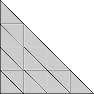 | 17. 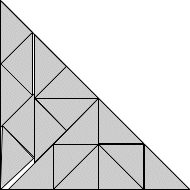 | 18. 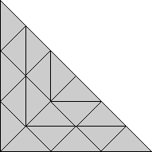 | ||
| s = 4 Trivial. | s = 4.181+ Found by Maurizio Morandi in August 2007. | s = 3√2 = 4.242+ Trivial. |
| 19. 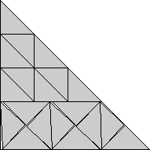 | 20. 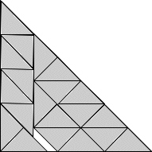 | 21. 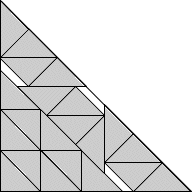 | ||
| s = 4.413+ Found by David W. Cantrell in May 2005. | s = 4.535+ Found by Maurizio Morandi in August 2007. | s = (6 + 9√2)/4 = 4.681+ Found by Maurizio Morandi in October 2007. |
| 22. 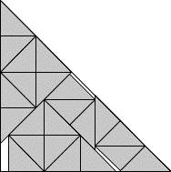 | 23. 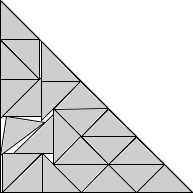 | 24. 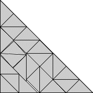 | ||
| s = 3 + 5√2/4 = 4.767+ Found by Maurizio Morandi in July 2009. | s = 4.886+ Found by Maurizio Morandi in November 2007. | s = 4.947+ Found by Maurizio Morandi in October 2007. |
| 25. 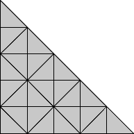 | 26. 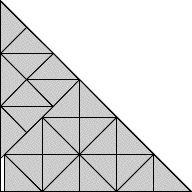 | 27. 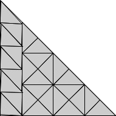 | ||
| s = 5 Trivial. | s = 3 + 3/√2 = 5.121+ Found by Maurizio Morandi in July 2009. | s = 5.241+ Found by Maurizio Morandi in July 2009. |